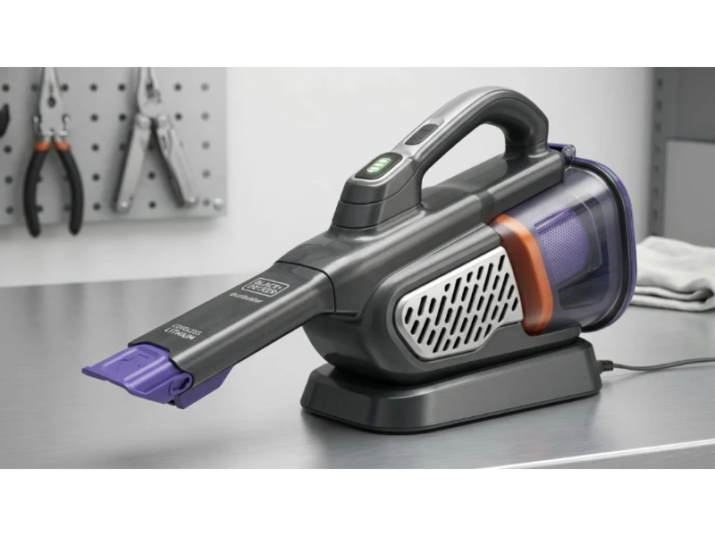
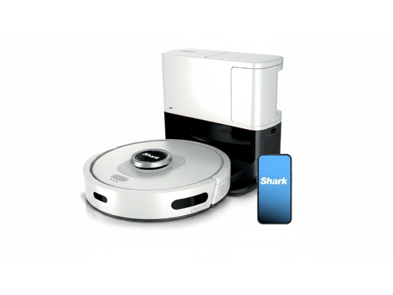
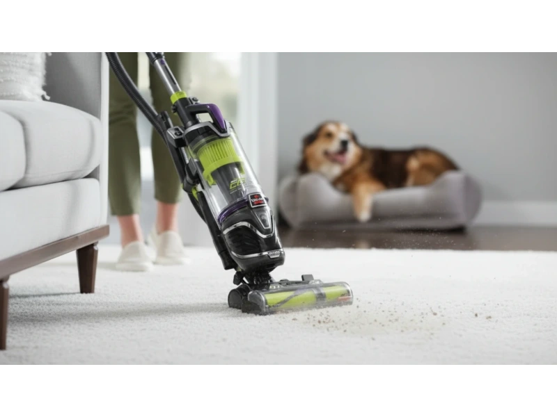
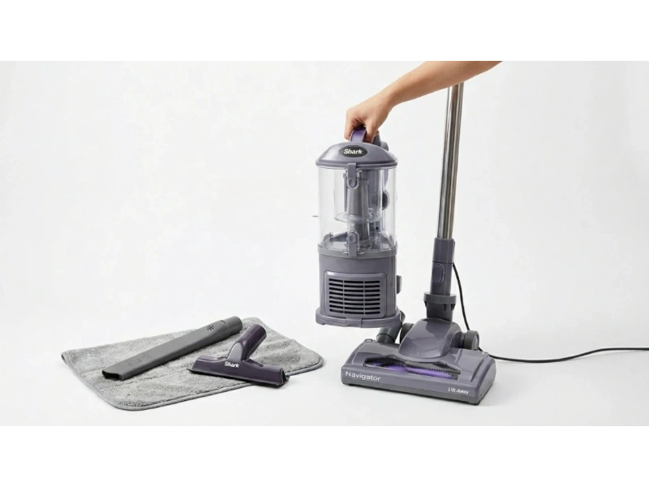

Handheld vacuums have changed a lot in the past few years. What used to be a weak, noisy tool is now powerful enough to clean pet hair, car interiors, and tight corners without much effort. But here's the problem. There are too many options, and most look similar on the surface.
So how do you actually choose the right one?
We'll break down the top handheld vacuums in 2026 using verified technical details, real-world use cases, and honest pros and cons. No fluff. No guesswork. Just practical insights that help you make a confident choice.
Top 5 Best Handheld Vacuums
These five models stand out because they solve different problems. Some focus on runtime, others on pet hair, and a few prioritize portability. Instead of forcing one "perfect" pick, I'll show you where each one fits best.
- Black+Decker Dustbuster AdvancedClean+ (HHVK515J00)
- Shark UltraCyclone Pet Pro+ (CH951)
- Bissell Pet Hair Eraser (2390)
- Shark Wandvac (WV201)
- Black+Decker Pivot Max (BDH2000PL)
Each vacuum below is reviewed based on real usage factors like suction consistency, weight balance, runtime reliability, and usability in tight spaces. This helps you match the product with your actual cleaning needs instead of just comparing specs.
1. Black+Decker Dustbuster AdvancedClean+ (HHVK515J00)

This model sits right in the sweet spot. It balances power, runtime, and usability better than most handheld vacuums in this price range.
Key specs at a glance
What makes it practical
The biggest advantage here is runtime. In real use, 20 to 25 minutes is enough to clean a car interior, sofa, and even a small room without stopping. Most handheld vacuums struggle to cross the 15-minute mark.
The built-in crevice tool is another smart feature. You don't have to attach or detach anything — just pull it out when needed. This saves time, especially when cleaning between car seats or under furniture.
Real-world use case
Let's say you're cleaning your car after a long trip. Crumbs, dust, and small debris are everywhere. With this vacuum, you can move from seats to floor mats to tight corners without switching tools or worrying about the battery dying halfway.
Performance insight
The suction stays consistent even as the dustbin fills up. That's important because some vacuums lose power quickly once debris builds up. The Powerboost mode helps with tougher messes, but it drains battery faster — best used in short bursts.
Downsides you should know
It's not the quietest option. The motor can get loud, especially in boost mode. Also, while it's lightweight, it's not the lightest in this list.
Who should choose this
If you want a reliable all-purpose handheld vacuum that doesn't force you to compromise on runtime or usability, this is a strong pick.
2. Shark UltraCyclone Pet Pro+ (CH951)

This one is clearly designed for a specific audience — pet owners who struggle with hair stuck on furniture, carpets, and car seats.
Key specs at a glance
What makes it different
The standout feature here is the self-cleaning pet power brush. If you've ever used a vacuum that gets clogged with hair, you already know how frustrating that can be. This brush roll is designed to prevent hair wrap — meaning less maintenance and more consistent performance.
Real-world use case
Imagine cleaning a couch covered in pet fur. With a standard handheld vacuum, hair often gets tangled in the brush. You have to stop, pull it out, and continue. With this model, that problem is mostly gone. You can clean continuously without interruptions.
Performance insight
The dual cyclonic air streams help maintain suction even when dealing with fine dust and pet hair. This is useful for deep cleaning fabric surfaces. But here's the trade-off — runtime is short. Around 10 to 12 minutes means you need to be quick and focused during cleaning.
Handling and comfort
At 2.8 lbs, it's slightly heavier than average. You'll notice it during longer cleaning sessions, especially when holding it at different angles.
Downsides you should know
Battery life is the biggest limitation. It's not ideal for large cleaning tasks unless you're okay with recharging in between.
Who should choose this
If pet hair is your main problem, this vacuum solves it better than most. It's built for that one job, and it does it well.
3. Bissell Pet Hair Eraser (2390)

This model focuses on affordability without cutting corners on functionality. It's a practical choice if you want solid performance at a lower price.
Key specs at a glance
What stands out
The triple-level filtration system is a big plus. It helps trap fine dust and improves air quality during cleaning — useful if you're dealing with allergens along with pet hair. The motorized brush tool also performs well on upholstery and carpeted stairs.
Real-world use case
Think about cleaning stairs or fabric chairs where dust and hair settle deep into fibers. This vacuum handles that better than basic models without motorized tools.
Performance insight
It's not the most powerful vacuum in this list, but it's consistent. And consistency matters more than peak power in everyday cleaning.
Build and durability
This is one of the more durable options. It feels sturdy and can handle regular use without issues.
Downsides you should know
It's the heaviest model here. At 3 lbs, it can feel a bit bulky during extended use. You may need to switch hands occasionally.
Who should choose this
If you want a budget-friendly handheld vacuum that still delivers reliable performance for pet hair and upholstery, this is a solid choice.
4. Shark Wandvac (WV201)

This model focuses on one thing above all else — convenience. It's designed for quick, everyday cleaning where speed and ease matter more than deep cleaning power.
Key specs at a glance
What makes it stand out
The first thing you notice is the weight. At just 1.4 lbs, it's the lightest handheld vacuum on this list. You can pick it up, clean a mess, and put it back in seconds without any effort.
The charging dock also plays a big role here. Instead of hiding the vacuum in a cabinet, you keep it on a countertop or shelf. That means it's always within reach and always charged.
Real-world use case
Picture this — you spill some snacks on your desk or kitchen counter. Instead of pulling out a heavy vacuum, you grab this, clean the mess in under a minute, and drop it back on the dock. It fits perfectly into that kind of daily routine.
Performance insight
The high-speed brushless motor provides solid suction for small debris like dust, crumbs, and fine particles. The tapered nozzle helps concentrate airflow, which improves pickup on flat surfaces. But it's not built for heavy-duty cleaning — thick carpets, large debris, or deep pet hair can push it beyond its limits.
Usability and design
The slim design makes it easy to store and visually appealing. If you care about keeping your space clean and minimal, this model fits right in. The lightweight build also reduces hand fatigue completely — you can use it with one hand without even thinking about it.
Downsides you should know
The dustbin is small. You'll need to empty it frequently, especially during longer cleaning sessions. Battery life is also limited — around 10 minutes means it's strictly for short tasks.
Who should choose this
If you want a lightweight, always-ready vacuum for quick cleanups in small spaces, this is a great fit. It's less about power and more about convenience.
5. Black+Decker Pivot Max (BDH2000PL)
This model takes a different approach. Instead of focusing only on power or weight, it solves a very specific problem — cleaning awkward angles and tight spaces.
Key specs at a glance
What makes it unique
The 200-degree pivoting nozzle is the defining feature here. It allows you to adjust the angle of the vacuum head to reach areas that are normally hard to clean — spaces like under car seats, behind furniture, and inside tight corners.
Real-world use case
Let's say you're cleaning between couch cushions or under a low table. With a standard vacuum, you either struggle with angles or move furniture around. With this one, you simply adjust the nozzle and continue cleaning without changing your position.
Performance insight
The cyclonic action helps separate dust from the filter, keeping suction more stable over time. The motor delivers strong performance for its size, making it effective on both hard surfaces and fabric.
Storage advantage
One underrated benefit is how compact it becomes when folded. The pivot design allows it to take up less space, which is useful if you have limited storage.
Downsides you should know
Runtime is on the shorter side. Around 10 to 12 minutes means it's not ideal for large cleaning jobs. Also, while the pivot feature is useful, it can take a little time to get used to.
Who should choose this
If your main challenge is cleaning tight spaces and awkward angles, this vacuum offers a practical solution that most others don't.
Quick Comparison Table
| Model | Weight | Runtime | Best For | Price Range |
|---|---|---|---|---|
| B+D AdvancedClean+ | 2.4 lbs | 20–25 min | All-purpose / Car cleaning | $99–$110 |
| Shark UltraCyclone Pet Pro+ | 2.8 lbs | 10–12 min | Pet hair on furniture | $89–$100 |
| Bissell Pet Hair Eraser | 3.0 lbs | 15–17 min | Budget / Upholstery & stairs | $70–$90 |
| Shark Wandvac | 1.4 lbs | ~10 min | Quick daily cleanups | $115–$130 |
| B+D Pivot Max | ~2.5 lbs | 10–12 min | Tight spaces & awkward angles | $70–$85 |
Use Case Guide
Choosing the right handheld vacuum depends less on specs and more on how you plan to use it daily. Here's how to match each model to real-life needs.
For car cleaning
If you clean your car often, runtime and attachments matter more than anything else. The Black+Decker AdvancedClean+ works well because of its long runtime and built-in crevice tool — you can clean seats, mats, and tight corners in one go. The Pivot Max is also a strong option here because of its adjustable nozzle, especially for reaching under seats.
For pet hair on furniture
Pet hair needs specialized tools. Regular suction alone is not enough. The Shark UltraCyclone Pet Pro+ stands out with its self-cleaning brush roll — it saves time and prevents hair from clogging the vacuum. The Bissell Pet Hair Eraser is a good alternative if you want a lower-cost option with solid performance on upholstery.
For quick daily cleanups
Sometimes you just need something fast and easy. The Shark Wandvac is perfect for this. It's lightweight, easy to grab, and ideal for small messes on desks, counters, or floors.
For small apartments or limited storage
The Shark Wandvac fits easily on a countertop with its charging dock. The Pivot Max folds into a compact shape, making it easier to store in tight spaces.
For all-purpose home use
If you want one vacuum that can handle a bit of everything, the Black+Decker AdvancedClean+ offers the best balance of runtime, usability, and performance.
Frequently Asked Questions
How much runtime do I actually need in a handheld vacuum?
For most people, 10 to 15 minutes is enough for quick cleaning tasks like car interiors or small messes. If you want to clean multiple areas in one go, aim for 20 minutes or more.
Are handheld vacuums strong enough for pet hair?
Yes, but only if they include the right tools. Models with motorized brushes or self-cleaning brush rolls perform much better on pet hair than standard nozzles.
Is a lightweight vacuum always better?
Not always. Lightweight models are easier to use, but they often have smaller dustbins and shorter battery life. It's about balance, not just weight.
How important is dustbin size?
It matters more than most people think. A larger dustbin means fewer interruptions. Smaller bins are fine for quick cleanups but can get frustrating during longer sessions.
Can I replace a full-size vacuum with a handheld one?
In most cases, no. Handheld vacuums are designed for spot cleaning and small areas. They work best as a complement to a full-size vacuum, not a replacement.
Final Verdict
Choosing the right handheld vacuum in 2026 comes down to one simple thing — what problem are you trying to solve? Each model in this list is built with a clear purpose. When you match that purpose with your daily needs, the decision becomes much easier.
Quick decision guide
- Go with the Black+Decker AdvancedClean+ if you want a reliable all-around vacuum with long runtime and strong everyday performance.
- Pick the Shark UltraCyclone Pet Pro+ if pet hair is your biggest challenge and you want less maintenance.
- Choose the Bissell Pet Hair Eraser if you need a budget-friendly option that still handles upholstery and stairs well.
- Get the Shark Wandvac if you care most about portability and quick cleanups.
- Select the Black+Decker Pivot Max if you often deal with tight spaces and awkward angles.
Practical takeaway
Don't focus only on specs like voltage or runtime. Think about how often you clean, what type of mess you deal with, and where you'll use the vacuum. A shorter runtime might be fine for quick cleanups. A slightly heavier model might be worth it if it removes pet hair better. These small trade-offs matter more than numbers on paper.